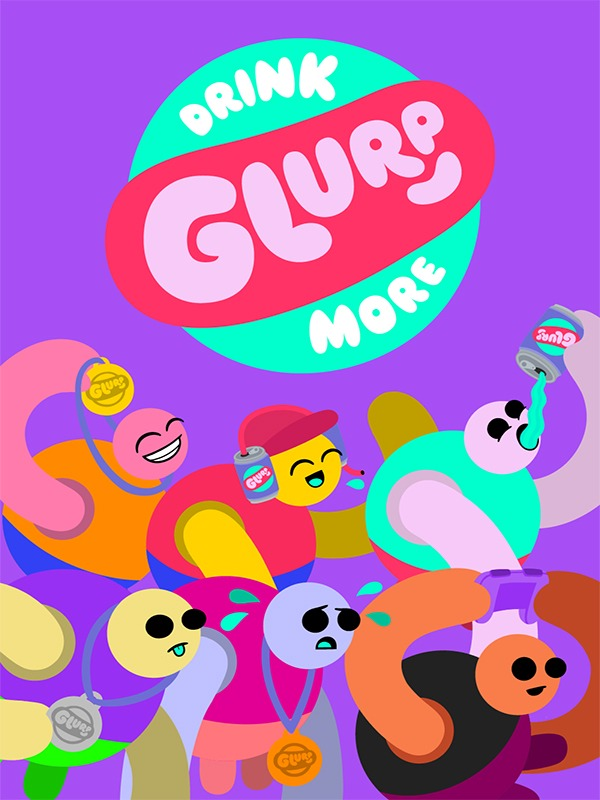

Drink More Glurp
Drink More Glurp
Details
|  | |
| Playtime | Not Played |
| Last Activity | Never |
| Added | 12/30/2023 6:40:47 |
| Modified | 12/31/2023 8:28:30 |
| Completion Status | Not Played |
| Library | Steam |
| Source | Steam |
| Platform | PC (Windows) |
| Release Date | 8/6/2020 |
| Community Score | |
| Critic Score | |
| User Score | |
| Genre | Indie Sport |
| Developer | CATASTROPHIC_OVERLOAD |
| Publisher | The Yogscast |
| Feature | Multiplayer Single Player |
| Links | Steam Official Twitch |
| Tag | |
Description
Party game madness sponsored by Glurp
Drink More Glurp is a wacky physics, sports(ish), hot seat, party game set on a distant world where aliens have copied Earth’s summer games and got everything slightly wrong.

Having binge watched broadcasts of Earth TV the aliens are convinced that advertising is the most important part of any sporting event. Sponsors will randomly take control of events and twist them to fit their agenda, leading to a chaotic galactic summer games like no other.


DRINK MORE GLURP
Glurp believes in giving you the very best in beverage technology. With maximum colour and zero taste, Glurp gives our athletes the edge when competing in the games.
*******************
PC Gamer
“The soundtrack of Drink More Glurp is the hoots and gasps of your friends, and when someone figures out a new trick, or overcomes the seemingly impossible, the mood is absolutely electric.”
EDGE magazine
“We can see this becoming a party favourite” “The sponsorship structure is a stroke of brilliance.”
RockPaperShotgun
“When I won a round, I chugged my whole can of glurp and loosed a dreadful, ululating bellow like a wookie”
Kotaku UK
“Simple concepts matched with a constantly changing rulebook make this an outstanding party game.”
Drink More Glurp is a wacky physics, sports(ish), hot seat, party game set on a distant world where aliens have copied Earth’s summer games and got everything slightly wrong.
Having binge watched broadcasts of Earth TV the aliens are convinced that advertising is the most important part of any sporting event. Sponsors will randomly take control of events and twist them to fit their agenda, leading to a chaotic galactic summer games like no other.
Play together with friends
Run, jump, throw and compete in crazy contests with up to 20 local players in Party Mode or take on the single player Challenge Mode and climb the global leaderboards in a variety of challenges. Watch replays of your friends flailing about or study the top scores to hone your own athletic technique.Loaded with content!
With an almost endless number of event and sponsor combinations, Glurp has masses of replayability. Just when you think you are getting the hang of an event, you get laser hands!Watch me flail!
Glurp makes for a great spectator game – expect lots of shouting and cheering! Designed to keep the action going with drop in / drop out and defer turn features. One controller is all you need.Move with style
Each arm of the athlete is controlled independently with the controller’s sticks. You can move and grab with each arm... and that’s it. Get competitive with your own playstyles and unique techniques.Features:
- Local multiplayer Party Mode from 2-20 Players
- Thousands of possible event and sponsor combinations
- A new competition each time you play
- Single player Challenge Mode with online leaderboards and replays
- Silly physics
- Now with MORE Glurp
*** And now a word from our sponsor ***
MAXIMUM COLOUR, ZERO TASTEDRINK MORE GLURP
Glurp believes in giving you the very best in beverage technology. With maximum colour and zero taste, Glurp gives our athletes the edge when competing in the games.
*******************
PC Gamer
“The soundtrack of Drink More Glurp is the hoots and gasps of your friends, and when someone figures out a new trick, or overcomes the seemingly impossible, the mood is absolutely electric.”
EDGE magazine
“We can see this becoming a party favourite” “The sponsorship structure is a stroke of brilliance.”
RockPaperShotgun
“When I won a round, I chugged my whole can of glurp and loosed a dreadful, ululating bellow like a wookie”
Kotaku UK
“Simple concepts matched with a constantly changing rulebook make this an outstanding party game.”